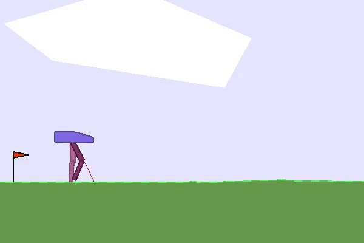

BipedalWalker¶
Overview¶
In the BipedalWalker environment, the agent needs to output 4-dimensional continuous actions to control the 2D biped robot to move forward on rough terrain. Applying motor torque at each step will get a negative reward, and each step forward will get a positive reward. If you successfully move to the farthest point, you can get more than 300 points reward. If the robot falls on the way, it will get -100 points and the game will end. The state of the agent is a 24-dimensional continuous vector, including hull angle speed, angular velocity, horizontal velocity, vertical velocity, joint position and joint angular velocity, marks that the leg touches the ground, and 10 lidar rangefinder measurements . Note that the state vector does not contain the coordinates of the robot.
Install¶
Installation Method¶
Just install the gym and box2d libraries, which can be installed by pip or combined with DI-engine
# Method1: Install Directly
pip install gym
pip install box2d
# Method2: Install with DI-engine requirements
cd DI-engine
pip install ".[common_env]"
Verify Installation¶
After the installation is complete, you can verify that the installation was successful by running the following command on the Python command line:
import gym
env = gym.make('BipedalWalker-v3')
obs = env.reset()
print(obs.shape) # (24,)
Image¶
The image of DI-engine includes its own framework and Atari environment, which can be obtained through docker pull opendilab/ding:nightly. Get more information? Visit docker
hub
Space before Transformation (Original Environment)¶
Observation Space¶
The state of the agent is a 24-dimensional continuous vector, including hull angle speed, angular velocity, horizontal velocity, vertical velocity, joint position and joint angular velocity, marks that the leg touches the ground, and 10 lidar rangefinder measurements value. Note that the state vector does not contain the coordinates of the robot.
Action Space¶
The environment action space is a 4-dimensional continuous vector, and each dimension has a value between [-1, 1].
These four-dimensional continuous vectors control the torques of the robot’s four leg joints, respectively. The robot has a total of 2 legs, each leg has two joints (waist joint and knee joint), a total of 4 joints need to be controlled.
Bonus Space¶
The robot will get a negative reward for applying motor torque at each step, and a positive reward for each step forward. If it successfully moves to the farthest point, it will get a reward of more than 300 points. If the robot falls on the way, it will get -100 points and the game will end. The reward is a floatnumeric value in the range [-400, 300].
Key Facts¶
Other¶
Random Seed¶
There are two parts of random seeds in the environment that need to be set, one is the random seed of the original environment, and the other is the random seed of the random library used by various environment transformations (such as
random,np.random)For the environment caller, just set these two seeds through the
seedmethod of the environment, and do not need to notice the specific implementation detailsConcrete implementation inside the environment: For the seed of the original environment, set before calling the
resetmethod of the environment, before the concreteresetConcrete implementation inside the environment: For random library seeds, set the value directly in the
seedmethod of the environment
Store Video¶
After the environment is created, but before reset, call the enable_save_replaymethod to specify the path to save the game replay. The environment will automatically save the local video files after each episode ends. (The default call gym.wrappers.RecordVideoimplementation), the code shown below will run an environment episode and save the results of this episode in a folder ./video/:
from easydict import EasyDict
from dizoo.box2d.bipedalwalker.envs import BipedalWalkerEnv
import numpy as np
env = BipedalWalkerEnv(EasyDict({'act_scale': True, 'rew_clip': True, 'replay_path': './video'}))
obs = env.reset()
while True:
action = np.random.rand(24)
timestep = env.step(action)
if timestep.done:
print('Episode is over, final eval reward is: {}'.format(timestep.info['final_eval_reward']))
break
DI-zoo Runnable Code Example¶
The full training configuration file is at github
link
For specific configuration files, such as bipedalwalker_td3_config.py, use the following demo to run:
bipedalwalker_td3_config = dict(
env=dict(
collector_env_num=1,
evaluator_env_num=5,
# (bool) Scale output action into legal range.
act_scale=True,
n_evaluator_episode=5,
stop_value=300,
rew_clip=True,
replay_path=None,
),
policy=dict(
cuda=True,
priority=False,
model=dict(
obs_shape=24,
action_shape=4,
twin_critic=True,
actor_head_hidden_size=400,
critic_head_hidden_size=400,
actor_head_type='regression',
),
learn=dict(
update_per_collect=4,
discount_factor=0.99,
batch_size=128,
learning_rate_actor=0.001,
learning_rate_critic=0.001,
target_theta=0.005,
ignore_done=False,
actor_update_freq=2,
noise=True,
noise_sigma=0.2,
noise_range=dict(
min=-0.5,
max=0.5,
),
),
collect=dict(
n_sample=256,
noise_sigma=0.1,
collector=dict(collect_print_freq=1000, ),
),
eval=dict(evaluator=dict(eval_freq=100, ), ),
other=dict(replay_buffer=dict(replay_buffer_size=50000, ), ),
),
)
bipedalwalker_td3_config = EasyDict(bipedalwalker_td3_config)
main_config = bipedalwalker_td3_config
bipedalwalker_td3_create_config = dict(
env=dict(
type='bipedalwalker',
import_names=['dizoo.box2d.bipedalwalker.envs.bipedalwalker_env'],
),
env_manager=dict(type='base'),
policy=dict(type='td3'),
)
bipedalwalker_td3_create_config = EasyDict(bipedalwalker_td3_create_config)
create_config = bipedalwalker_td3_create_config
if __name__ == '__main__':
from ding.entry import serial_pipeline
serial_pipeline((main_config, create_config), seed=0)
Benchmark Algorithm Performance¶
Average reward more than or equal to 300 is considered as a better agent
BipedalWalker + TD3